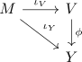

universelle Eigenschaft der Hausdorff-Vervollständigung
Satz
Sei $(M,d)$ ein metrischer Raum und $(V,d)$ die Metrische Vervollständigung nach Hausdorff mit der Isometrische Einbettung $\iota_V: M \rightarrow V$ Sei ferner $(Y,d)$ ein vollständiger metrischer Raum, so dass $\iota_Y: M \rightarrow Y$ eine Isometrische Einbettung mit dichtem Bild, d.h. $\overline{\iota[M]} = Y$ Dann existiert eine eindeutige Isometrie $\phi: V \rightarrow Y$, so dass folgendes Dagramm kommutiert

Beweis
Sei $v \in V$, so existiert nach Annahme wegen $\overline{\iota[M]} = V$ eine Folge $v_n \rightarrow v$ mit $v_n \in \iota_V[M]$. Damit existiert eine Cauchy Folge $m_n$ mit $\iota_V(m_n) = v_n \rightarrow v \in V$, da $v_n$ als konvergente Folge eine Cauchy-Folge ist und $\iota_V$ eine Isometrie aufs Bild ist. Ferner gilt analog, dass $\iota_Y(m_n)$ Cauchy ist und damit auch $\iota_Y(m_n) \rightarrow y \in Y$. Wir definieren im folgenden $\phi(v) \coloneqq y$.
Wohldefiniert
linkstotal
folgt aus den Vorbemerkungen (Vollständigkeit von $Y$)
rechtseindeutig
folgt aus der Eindeutigkeit von $\iota_V^{-1}(m_n)$, da $\iota_V$ injektiv ist sowie der Eindeutigkeit des Grenzwerts in metrische Räumen in $Y$
surjektiv
Sei $y \in \overline{\iota_Y[M]}$ so existiert eine Cauchy-Folge $m_n \in M$ mit $\iota_Y(m_n) \rightarrow y$. Somit ist $\iota_V(m_n)$ ebenfalls Cauchy und wegen der Vollständigkeit konvergent, d.h. es existiert nach Konstruktion ein $v$ mit $\iota_V(m_n) \rightarrow v$ und damit auch $\phi(v) = y$
injektiv
Seien $v,v' \in V$ verschieden. Dann folgt, dass für fast alle $v_n,v_n' \in \iota_V[M]$ gilt $d(v_n,v_n') > \varepsilon$ für hinreichend kleines $\varepsilon > 0$. Zudem ist $m_n \coloneqq \iota_V^{-1}(v_n)$ wegen der Injektivität eindeutig und es gilt $d(m_n,m_n') > \varepsilon$ für fast alle $n$ Daraus folgt, dass $d(\iota_Y(m_n),\iota_V(m_n')) > \varepsilon$ und somit $\iota_V(m_n)$ nicht gegen den gleichen Grenzwert wie $\iota_V(m_n')$ konvergieren kann, d.h. nach Konstruktion gilt $\phi(v) \neq \phi(v')$
Isometrische Einbettung
Seien $v,z \in V$ gegeben, so existieren Cauchy Folgen $v_n,z_n \in M$ mit $\iota_V(v_n) \rightarrow v, \iota_Y(z_n) \rightarrow z$. Sei $\varepsilon > 0$ gegeben, so existiert für $\frac{\varepsilon}{4} > 0$ ein $n \in \mathbb{N}$ mit $d(\iota(z_n),z) < \frac{\varepsilon}{4}$, analog für $v_n$. Es folgt dann durch Anwendung der Dreiecksungleichung
Analog gilt dann auch, da $\iota_Y$ Abstände erhält
Somit folgt
für beliebiges $\varepsilon > 0$, d.h. auch
Aufgrund der injektivität lässt sich dieses Argument analog für $d(\phi(z), \phi(v))$ übertragen, so dass folgt
und damit auch Gleichheit